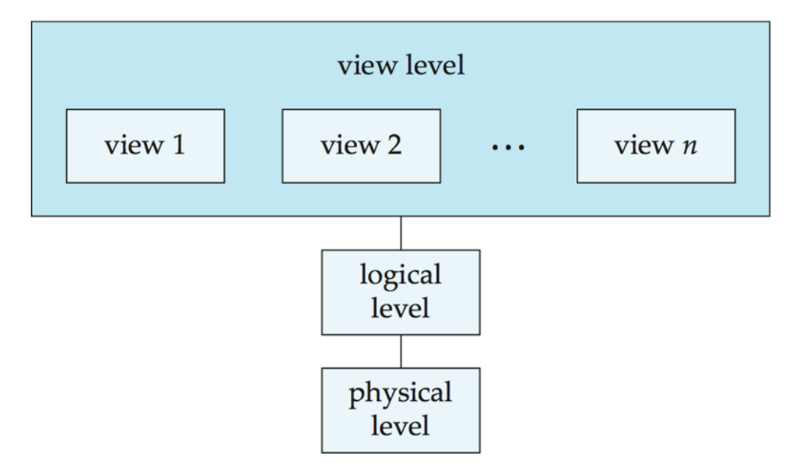
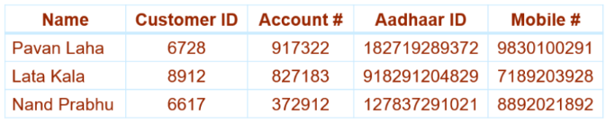
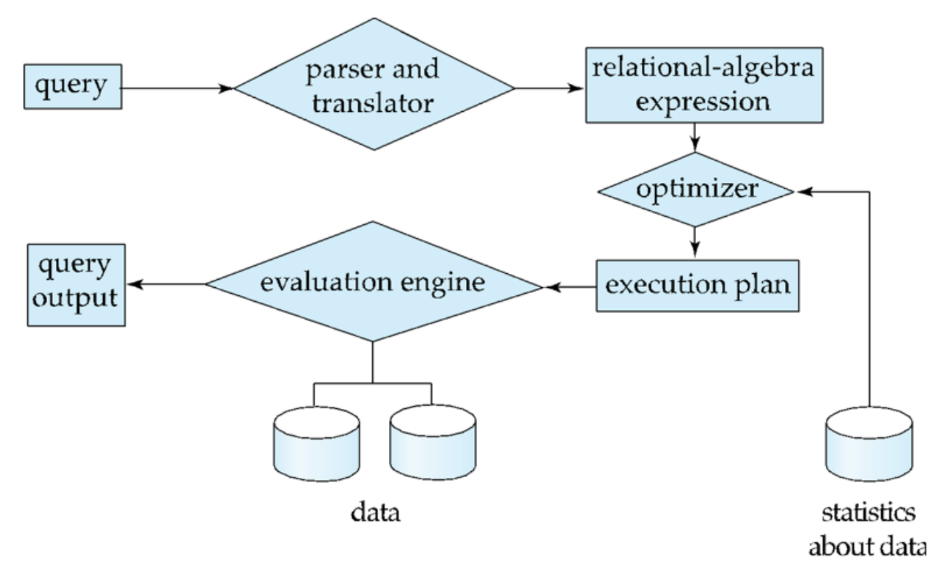

Introduction
A Database Management System (DBMS) is a collection of interrelated data along with a set of programs designed to store, manage and access the data efficiently and conveniently. The collection of structured information relevant to an enterprise is referred to as the database.
A DBMS is typically used to manage data that is highly valuable, relatively large and accessed by multiple users at the same time.
Applications : Sales, Manufacturing, Banking, Airlines, University etc.
Purpose of DBMS
The earliest form of data management was through the maintenance of physical ledgers and journals, known as Book Keeping. This way of managing data through physical records was susceptible to human errors, external tampering and physical damage. In addition to this, it was also difficult and time consuming to maintain and scale over the years.
With the advent of technology came the file-processing system, which stores permanent records in various files, and it needs various application programs to manage and retrieve data from the files. The filesystems posed several disadvantages, such as:
Data Redundancy and Inconsistency : Because individual programmers build distinct files and unique utility scripts over long intervals, records inevitably end up duplicated across separate files.
Difficulty in Accessing Data : Conventional file layouts do not support flexible data retrieval. If a new data retrieval request is made, that the system’s original developers did not explicitly anticipate, a programmer has to write a completely new script from scratch. This environment is neither convenient nor responsive.
Data Isolation : Because data variables are distributed across disconnected files featuring conflicting data structures and disparate formats, writing new applications to aggregate information remains highly complex.
Integrity Problems : Real-world enterprise rules require strict constraints (e.g., a bank or department account balance can never drop below zero). In a file system, these constraints must be explicitly hardcoded inside every single application script. Adding or modifying rules across hundreds of decoupled programs is error-prone.
Atomicity : Computer hardware is inherently vulnerable to power failures or system crashes. Database operations must be atomic, the transfer must take place in its entirety or not at all. Achieving this is difficult in standard file structures.
Concurrent-Access Anomalies : To maintain fast response windows and maximize performance, data systems must allow multiple processes or users to modify information simultaneously. In a primitive file-processing system managed by a conventional operating system, there is no centralized coordination engine to safely oversee this. Because separate application programs read and write raw text files independently, overlapping operations inevitably overwrite each other.
Security : In a standard file setup, it is incredibly difficult to enforce granular security constraints (such as field-level or row-level permissions) because the operating system does not understand the internal semantics of the data it is storing.
History of DBMS
1950s and Early 1960s : Data was stored on sequential-access magnetic tapes and punched card decks, which required sorting input records into a strict, predetermined order.
Late 1960s and Early 1970s: The widespread introduction of hard disks allowed software applications to fetch any data location in tens of milliseconds, liberating processing from the limits of sequentiality. Programmers utilized network and hierarchical data models, which required them to manually build and manipulate low-level structures like lists and trees on disk. Edgar Codd published a landmark paper in 1970 defining the relational model, which hid physical storage configurations from programmers and earned him the ACM Turing Award.
Late 1970s and 1980s: Initial performance concerns vanished when IBM Research launched the System R prototype, which pioneered declarative query optimization and led to early commercial database products. Commercial systems like Oracle, IBM DB2, and Berkeley’s Ingres arrived on the market, establishing SQL as the dominant enterprise data framework. The database community initiated parallel processing studies, distributed storage structures, and early object-oriented database implementations.
1990s: The explosive growth of the World Wide Web forced databases to maintain 24/7 web availability, handle massive concurrent transaction speeds, and integrate with internet user interfaces.
2000s: Systems evolved past tabular rows to support semi-structured XML or compact JSON formats, spatial navigation data, and graph structures designed for social networking connections. Open-source engines like MySQL and PostgreSQL surged in popularity, alongside “auto-admin” configuration scripts designed to dynamically adapt to shifting data workloads. Modern analytic needs birthed physical “column-store” layouts, scalable map-reduce parallel computation frameworks, and lightweight NoSQL systems that prioritized horizontal scaling over immediate consistency.
2010s: Lightweight NoSQL databases matured by re-integrating high-level declarative query pathways and stricter consistency configurations to alleviate developer strain. Corporate computing transitioned from localized server rooms toward distributed cloud environments and managed Software as a Service (SaaS) provider models.
View of Data
Data Abstraction
Abstraction refers to the hiding of implementation details to simplify the user interactions with the system.

Physical level : Describes how the data is actually stored. It describes complex low-level data structures in detail.
Logical level : Describes what data is stored in the database, along with the relationships that exist between them.
View level : This is the highest level of abstraction that simplifies the user interaction by describing only the necessary part of the database. The system may provide different views for the same database.
Schema and Instance
Schema refers to the overall design of the database. Database systems have several schemas, partitioned according to the levels of abstraction:
Physical schema : Describes the overall physical design of the database at the physical level.
Logical schema : Describes the overall logical design of the database at the logical level.
Instance refers to the collection of information stored in the database at a given point of time.

Physical data independence refers to the ability to modify the physical schema without changing the logical schema. This ensures that the different interfaces are defined such that any changes in one of the levels does not seriously influence others.
Data Models
The collection of conceptual tools for describing data, data relationships, data semantics, and consistency constraints is referred to as a data model. They can be classified into four different categories:
Relational Model : The relational model uses a collection of tables to represent both data and the relationships among those data. Each table has multiple columns, and each column has a unique name. Tables are also known as relations.
Entity-Relationship Model : The entity-relationship (E-R) data model uses a collection of basic objects, called entities, and relationships among these objects. An entity is a “thing” in the real world that is distinguishable from other objects.
Semi-structured Data Model : The semi-structured data model permits the specification of data where individual data items of the same type may have different sets of attributes.
Object-Based Data Model : Most modern software applications are built using Object-Oriented Programming (OOP) languages like Java, C++, or C#. In OOP, developers organize code around “objects” that bundle both data fields (attributes) and the actions that can be performed on them (methods).
Database Languages
- Data Definition Language (DDL) :
- The Data-Definition Language is used to specify the database schema and add structural properties or constraints to the data.
- The processing of DDL statements generates metadata (data about data), which is stored securely in a centralized data dictionary. This directory is a special set of system tables that regular users cannot modify directly; the database system consults it before reading or altering any live data.
- Example:
create table department(dept_name char(20), building char(15), budget numeric(12,2), primary key (dept_name)); - Data Manipulation Language (DML) :
- The Data-Manipulation Language enables users to access or alter data organized under the schema. DML handles information retrieval (queries), insertions, deletions, and updates.
- Example:
select instructor.name from instructor where instructor.dept_name = 'History';
Database Design
Database design primarily involves designing the database schema to manage large, interconnected bodies of enterprise information.
User Requirements Specification : Fully characterize and document the data needs of prospective database users.
Conceptual Design : Translate user requirements into a high-level, detailed conceptual schema of the database, focusing entirely on data modeling rather than physical implementation constraints.
Logical Design : Map the abstract, high-level conceptual schema onto the system-specific implementation data model of the chosen Database Management System (DBMS).
Physical Design : Specify the internal and low-level physical features of the database configuration.
Database Engine
A database system is partitioned into independent modules that isolate core responsibilities. The database engine can be broadly divided into three main functional segments: the storage manager, the query processor, and the transaction manager.
Storage Manager
The storage manager acts as the operating interface between the low-level data stored on disk hardware and the application programs or queries submitted to the system. It handles data sizing challenges that scale from gigabytes up to petabytes, optimizing data movement between disk arrays (HDD/SSD) and main memory to minimize hardware latency.
- Validates user access permissions and tests whether newly modified data satisfies established consistency constraints.
- Keeps the global database in a correct state despite hardware crashes and prevents operational conflicts between concurrent tasks.
- Directs the physical allocation of disk space and manages the underlying byte structures used to represent database records.
- Coordinates caching strategies, determining when to fetch data from physical storage into volatile main memory so data pools can scale larger than the computer’s actual RAM capacity.
Query Processor
The query processor simplifies and facilitates access to data. It abstracts implementation details so developers can manipulate records at the view level using declarative languages, translating logical commands into optimized sequences of lower-level physical operations.

- Parsing and Translation
- When a user submits a high-level declarative query, the system cannot execute it as raw text. First, the DDL Interpreter handles any structural commands and records schema definitions in the data dictionary.
- For data-manipulation requests, the DML Compiler parses the syntax to verify correctness against database schemas. It then translates the declarative text into a relational-algebra expression, mapping the query to an initial internal representation consisting of low-level instructions that the system can understand.
- Optimization
- A single declarative query can usually be mapped to a wide variety of alternative execution strategies, called evaluation plans, which all produce the exact same result but consume drastically different hardware resources.
- The DML Compiler runs a specialized subsystem known as the Query Optimizer. The optimizer evaluates these alternative paths, estimates the computational cost (disk I/O and CPU time) for each, and programmatically selects the lowest-cost, most efficient evaluation plan from among the alternatives.
- Evaluation
- Once the absolute lowest-cost evaluation plan is locked in by the optimizer, it is passed down to the execution layer.
- The Query Evaluation Engine takes these optimized, low-level instructions and directly executes them against the physical database files, fetching or altering the underlying data records and returning the finalized, clean result table back to the user.
Transaction Management
A transaction is a collection of separate program operations that perform a single logical function within an application. The transaction manager allows developers to treat multiple database updates as a single unit of work by enforcing the core ACID properties.
- Maintains system safety and manages failure recovery. It automatically detects system crashes and uses logging protocols to reverse or restore data back to the clean state that existed prior to the failed transaction.
- Supervised coordination system that prevents transactional race conditions and structural corruption when millions of global users update identical data fields simultaneously.